Contents
Clearing of previous data
clear all
clc
Selection of .csv file and the useful data
[FileName,PathName] = uigetfile({'*'},'Load Turn File');
[pathstr, name, ext] = fileparts(FileName);
delimiter = ',';
FileName = fullfile(PathName,[name ext]);
formatSpec = '%f%f%f%f%f%f%f%*s%*s%[^\n\r]';
fileID = fopen(FileName,'r');
dataArray = textscan(fileID, formatSpec, 'Delimiter', delimiter, 'EmptyValue' ,NaN, 'ReturnOnError', false);
fclose(fileID);
raw_data = [dataArray{:, 2} dataArray{:, 3} dataArray{:, 4} dataArray{:, 5} dataArray{:, 6} dataArray{:, 7}];
calibrated_data = Calibrate04008(raw_data);
Calibration of data
raw_accel = [raw_data(:, 1) raw_data(:, 2) raw_data(:, 3)];
raw_gyro = [raw_data(:, 4) raw_data(:, 5) raw_data(:, 6)];
cal_accel = [calibrated_data(:, 1) calibrated_data(:, 2) calibrated_data(:, 3)];
cal_gyro = [calibrated_data(:, 4) calibrated_data(:, 5) calibrated_data(:, 6)];
Sizing of Graphs
max_y_axis = 25;
max_x_axis = size(cal_accel,1);
max_gyro_axis = 3;
Calibrated accel and gyro graphs
figure('name',strcat(name,' - Calibrated 3 axis acceleration'));
plot(cal_accel);
xlabel('Frame (delta t = 0.02s)');
ylabel('g');
axis([0 ,max_x_axis,-1.5,1.5]);
title (strcat(name,' - Calibrated 3 axis acceleration'));
legend('X Axis', 'Y Axis', 'Z Axis');
figure('name',strcat(name,' - Calibrated 3 axis gyro'));
plot(cal_gyro);
xlabel('Frame (delta t = 0.02s)');
ylabel('Rad/s');
axis([0 ,max_x_axis,-max_gyro_axis,max_gyro_axis]);
title (strcat(name,' - Calibrated 3 axis gyro'));
legend('X Axis', 'Y Axis', 'Z Axis');
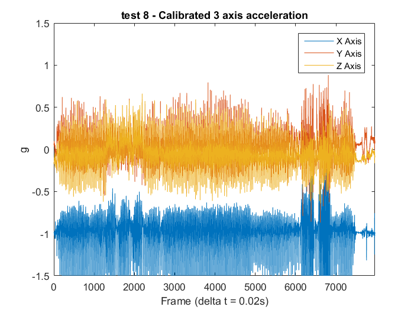 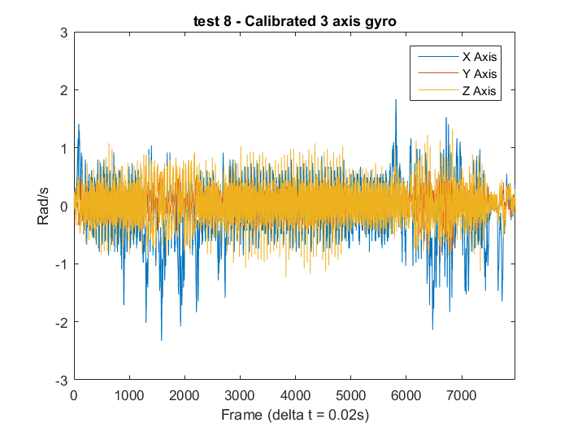
Calculation producing the normalised accelerations
normx = (cal_accel(:,1)+1)*9.81;
normy =cal_accel(:,2)*9.81;
normz = cal_accel(:,3)*9.81;
gyrox = cal_gyro(:,1);
gyroy = cal_gyro(:,2);
gyroz = cal_gyro(:,3);
Frequency and time step calculations
Fs = 50;
T = 1/Fs;
Fast fourier transform
L = max_x_axis;
NFFT = 2^nextpow2(L);
Y = fft(normz,NFFT)/L;
f = Fs/2*linspace(0,1,NFFT/2+1);
figure;
plot(f,2*abs(Y(1:NFFT/2+1)))
title('Single-Sided Amplitude Spectrum of y(t)')
xlabel('Frequency (Hz)')
ylabel('|Y(f)|')
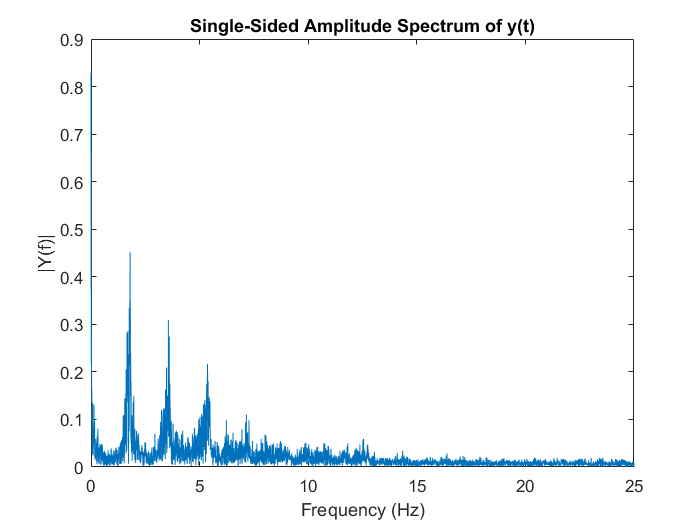
Filter
for n = 1:length(normx)
sample_num (n) = n;
end
sample_num = sample_num'; fc = 5;
wn = (fc/Fs)*2*pi;
[sample_num,normx] = butter(20,wn);
filterx= normx;
filterx = butterworthLowV1(normx, 1,50, 2.5);
filtery = butterworthLowV1(normy, 1,50, 2.5);
filterz = butterworthLowV1(normz, 1,50, 0.5);
Checking of fliter effect
L = max_x_axis;
NFFT = 2^nextpow2(L);
Y = fft(filterz,NFFT)/L;
f = Fs/2*linspace(0,1,NFFT/2+1);
figure;
plot(f,2*abs(Y(1:NFFT/2+1)))
title('Single-Sided Amplitude Spectrum of y(t)')
xlabel('Frequency (Hz)')
ylabel('|Y(f)|')
figure('name',strcat(name,' - Calibrated and Filtered X axis acceleration'),'units','normalized','outerposition',[0 0 1 1]);
plot(filterx);
xlabel('Frame (delta t = 0.02s)');
ylabel('m/s2');
axis([0 ,max_x_axis,-max_y_axis,max_y_axis]);
title (strcat(name,' - Filtered, Calibrated & Normalised X axis acceleration'));
pks = findpeaks(filterx);
indices = find(abs(pks)<0.5);
pks(indices) = [];
num_of_steps = length(pks)
figure('name',strcat(name,' - Calibrated and Filtered Y axis acceleration'),'units','normalized','outerposition',[0 0 1 1]);
plot(filtery);
xlabel('Frame (delta t = 0.02s)');
ylabel('m/s2');
axis([0 ,max_x_axis,-max_y_axis,max_y_axis]);
title (strcat(name,' - Calibrated Y axis acceleration'));
figure('name',strcat(name,' - Calibrated and Filtered Z axis acceleration'),'units','normalized','outerposition',[0 0 1 1]);
plot(filterz);
xlabel('Frame (delta t = 0.02s)');
ylabel('m/s2');
axis([0 ,max_x_axis,-max_y_axis,max_y_axis]);
title (strcat(name,' - Calibrated Z axis accelervation'));
num_of_steps =
263
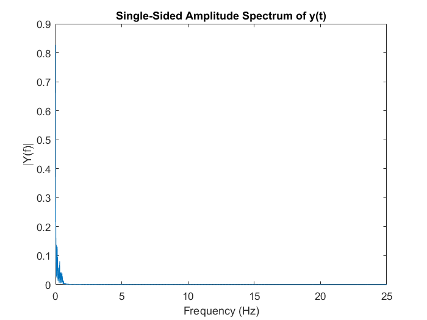 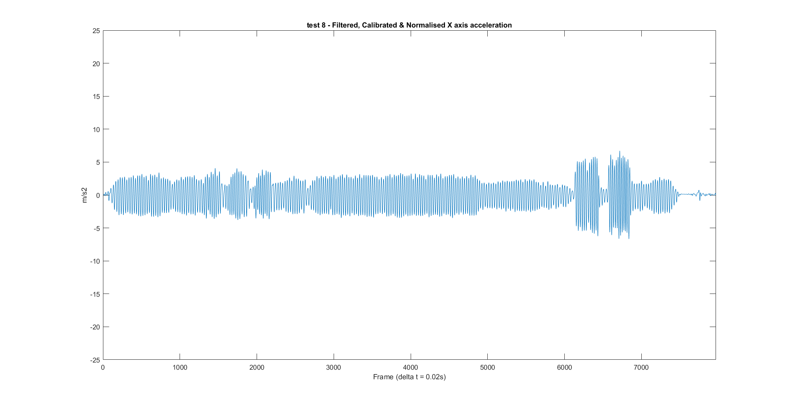 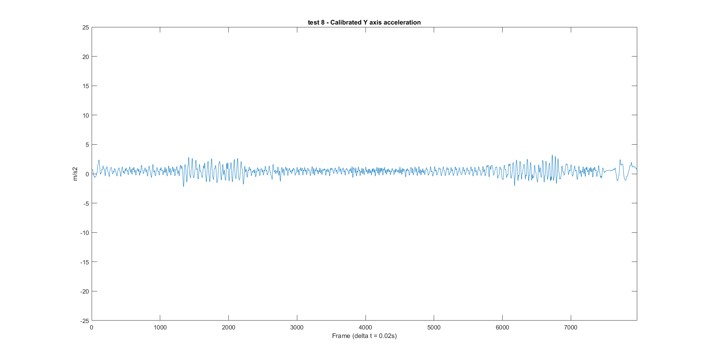

Calculating Jerk
for n = 1 : (length(normx)-1)
jerkx(n) = (filterx(n+1)-filterx(n))/T;
if jerkx(n)>17
step(n)= 1;
else
step(n) = 0;
end
jerky(n) = (filtery(n+1)-filtery(n))/T;
jerkz(n) = (filterz(n+1)-filterz(n))/T;
end
jerkx = jerkx';
jerky = jerky';
jerkz = jerkz';
Jerk Plots
figure('name',strcat(name,' - Calibrate X axis Jerk'),'units','normalized','outerposition',[0 0 1 1]);
plot(jerkx);
xlabel('Frame (delta t = 0.02s)');
ylabel('m/s3');
title (strcat(name,' - Calibrated X axis Jerk'));
figure('name',strcat(name,' - Calibrate Y axis Jerk'),'units','normalized','outerposition',[0 0 1 1]);
plot(jerky);
xlabel('Frame (delta t = 0.02s)');
ylabel('m/s3');
title (strcat(name,' - Calibrated Y axis Jerk'));
figure('name',strcat(name,' - Calibrate Z axis Jerk'),'units','normalized','outerposition',[0 0 1 1]);
plot(jerkz);
xlabel('Frame (delta t = 0.02s)');
ylabel('m/s3');
title (strcat(name,' - Calibrated Z axis Jerk'));
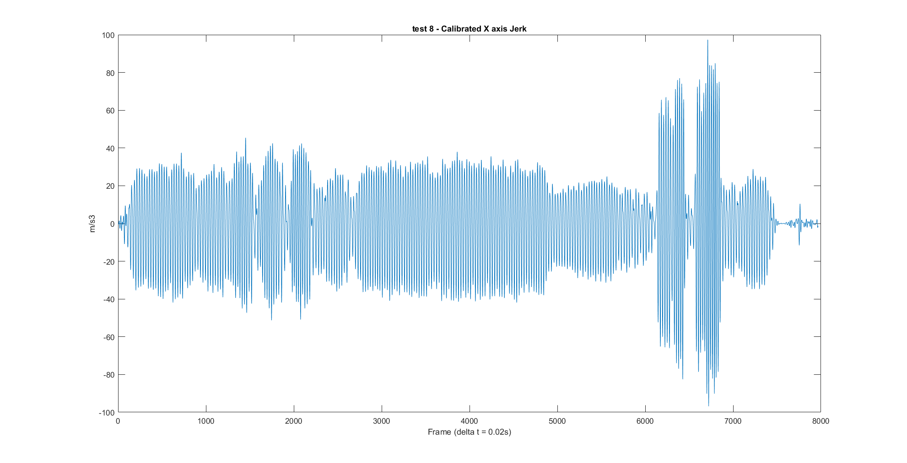 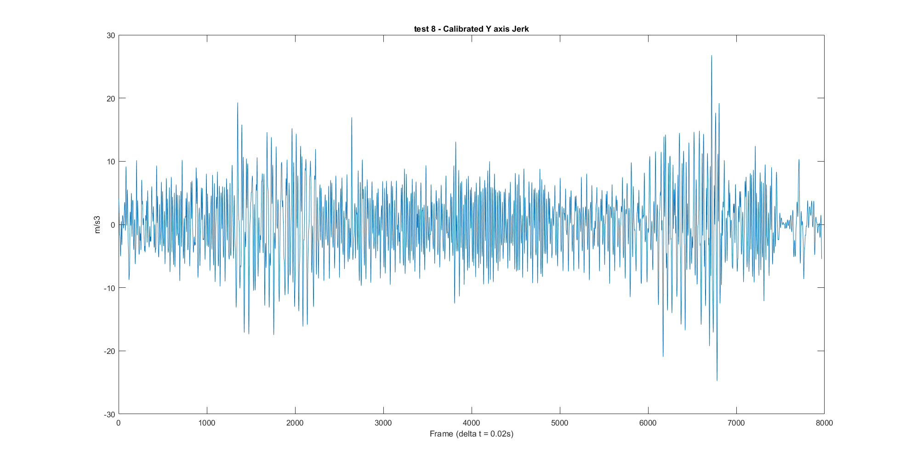 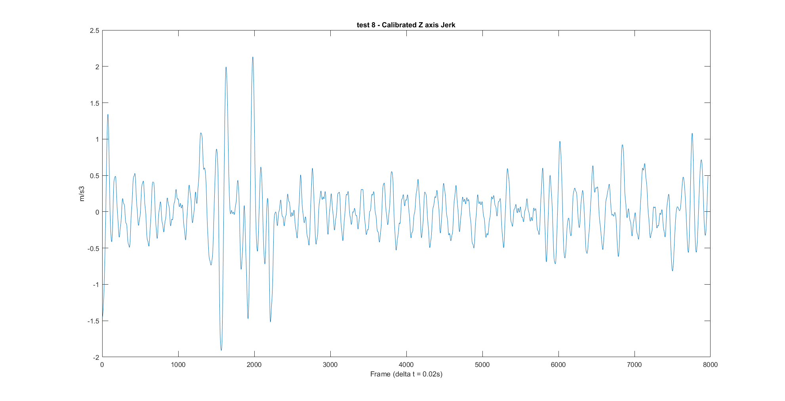
Gyroscope Plots
figure('name',strcat(name,' - Calibrated X axis gyro'),'units','normalized','outerposition',[0 0 1 1]);
plot(gyrox);
xlabel('Frame (delta t = 0.02s)');
ylabel('Rad/s');
axis([0 ,max_x_axis,-max_gyro_axis,max_gyro_axis]);
title (strcat(name,' - Calibrated X axis gyro'));
figure('name',strcat(name,' - Calibrated Y axis gyro'),'units','normalized','outerposition',[0 0 1 1]);
plot(gyroy);
xlabel('Frame (delta t = 0.02s)');
ylabel('Rad/s');
axis([0 ,max_x_axis,-max_gyro_axis,max_gyro_axis]);
title (strcat(name,' - Calibrated Y axis gyro'));
figure('name',strcat(name,' - Calibrated Z axis gyro'),'units','normalized','outerposition',[0 0 1 1]);
plot(gyroz);
xlabel('Frame (delta t = 0.02s)');
ylabel('Rad/s');
axis([0 ,max_x_axis,-max_gyro_axis,max_gyro_axis]);
title (strcat(name,' - Calibrated Z axis gyro'));
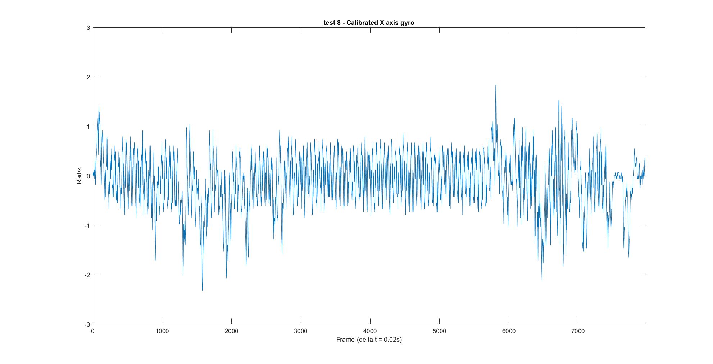 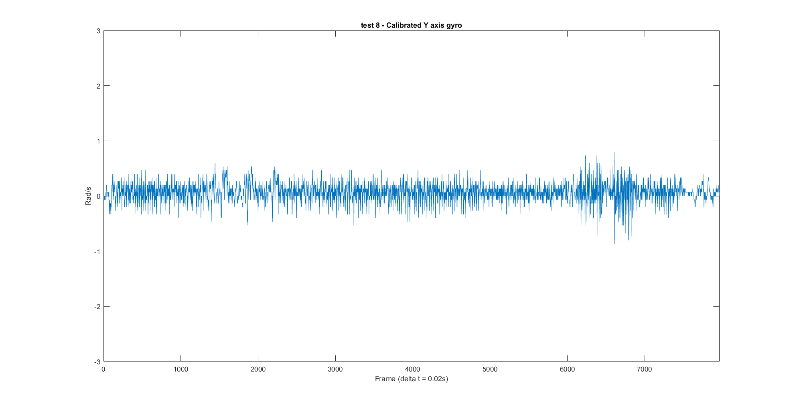 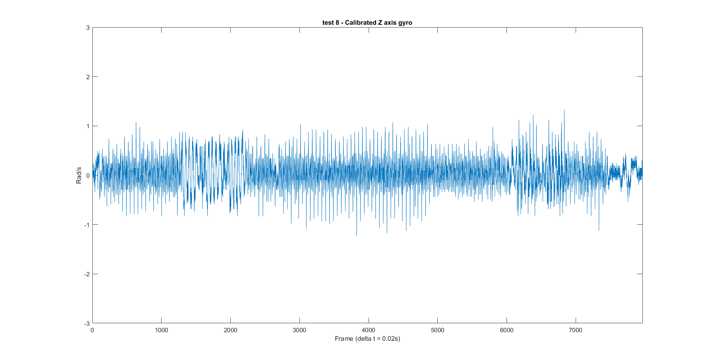
Calculating anglular displacement
anglex = 0;
angley = 0;
anglez = 0;
for n = 1: (length(gyrox)-1)
x_angle =((gyrox(n)+ gyrox(n+1))/2)*T;
anglex(n+1) = anglex(n) + x_angle;
y_angle =((gyroy(n)+ gyroy(n+1))/2)*T;
angley(n+1) = angley(n) + y_angle;
z_angle =((gyroz(n)+ gyroz(n+1))/2)*T;
anglez(n+1) = anglez(n) + z_angle;
end
anglex = (anglex') * 180/pi;
angley = (angley') * 180/pi;
anglez = (anglez') * 180/pi;
y1 = ones(length(anglex),1);
y90 = y1*90;
y_neg_90 = y1*-90;
y180 = y1*180;
y_neg_180 = y1*-180;
y270 = y1*270;
y_neg_270 = y1*-270;
y_neg_360 = y1*-360;
y_neg_450 = y1*-450;
y_neg_540 = y1*-540;
y_neg_630 = y1*-630;
y_neg_720 = y1*-720;
y_neg_810 = y1*-810;
y_neg_900 = y1*-900;
y_neg_990 = y1*-990;
Plotting of angular displacement
figure('name',strcat(name,' - Calibrated X axis angular dsiplacement'),'units','normalized','outerposition',[0 0 1 1]);
plot(anglex);
hold on
plot((filterx.*10 -1200))
plot((filterz.*10 -1400))
legend('angular displacement', 'X axis acceleration', 'Z axis acceleration')
xlabel('Frame (delta t = 0.02s)');
ylabel('Degrees');
title (strcat(name,' - Calibrated X axis angular displacement'));
figure('name',strcat(name,' - Calibrated Y axis angular displacement'),'units','normalized','outerposition',[0 0 1 1]);
plot(angley);
xlabel('Frame (delta t = 0.02s)');
ylabel('Degrees');
title (strcat(name,' - Calibrated Y axis angular displacement'));
figure('name',strcat(name,' - Calibrated Z axis angular displacement'),'units','normalized','outerposition',[0 0 1 1]);
plot(anglez);
xlabel('Frame (delta t = 0.02s)');
ylabel('Degrees');
title (strcat(name,' - Calibrated Z axis angular displacement'));
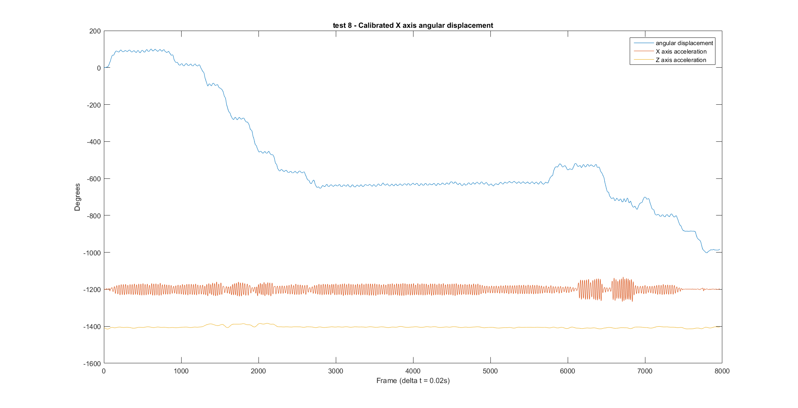 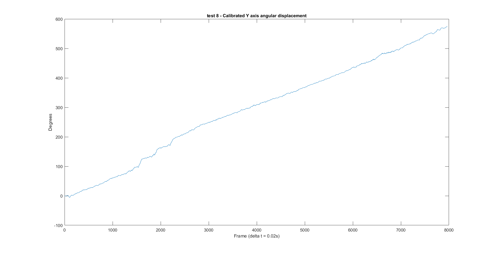 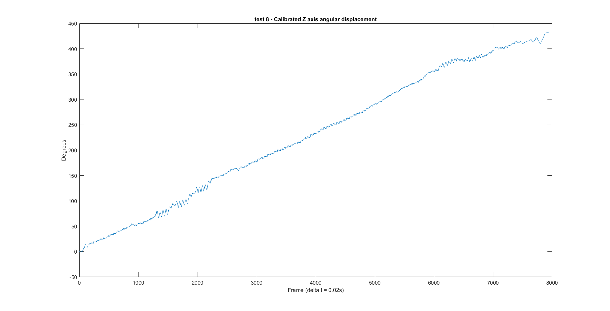
bens moving average
filename = 'C:\Users\Bradley\Google Drive\University\TPD\Testing\Accelerometer testing\Path Plotting Matlab\Route B\test 8 appended.csv';
data_raw = csvread(filename);
data_calibrated = Calibrate04008(data_raw);
sampling_rate = 0.02;
l = length(data_calibrated);
Theta = zeros(l,3);
Theta(1,1) = 0.034113388;
Theta(1,2) = -1.34362605;
Theta(1,3) = 0.007888563786;
for i= 2:l;
for j= 1:3;
Theta(i,j) = Theta(i-1,j)+data_calibrated(i-1,j+3)*sampling_rate;
end;
end;
T = zeros(l,1);
for i = 1:l;
T(i) = (i-1)*sampling_rate;
end;
XYZ_temp = zeros(3,1);
XYZ = zeros(l,3);
for i=1:l;
xyz = (data_calibrated(i, 1:3)).';
X_rot = [1,0,0;0,cos(Theta(i,1)),-sin(Theta(i,1));0,sin(Theta(i,1)),cos(Theta(i,1))];
Y_rot = [cos(Theta(i,2)),0,sin(Theta(i,2));0,1,0;-sin(Theta(i,2)),0,cos(Theta(i,2))];
Z_rot = [cos(Theta(i,3)),-sin(Theta(i,3)),0;sin(Theta(i,3)),cos(Theta(i,3)),0;0,0,1];
XYZ_temp = Z_rot*Y_rot*X_rot*xyz;
XYZ(i,1) = XYZ_temp(1,1);
XYZ(i,2) = XYZ_temp(2,1);
XYZ(i,3) = XYZ_temp(3,1);
end
Xacc = XYZ(:,1);
Yacc = XYZ(:,2);
Zacc = XYZ(:,3);
Xfreq = fft(abs(Xacc));
X2 = abs(Xfreq/l);
X1 = X2(1:l/2+1);
X1(2:end-1) = 2*X1(2:end-1);
Yfreq = fft(abs(Yacc));
Y2 = abs(Yfreq/l);
Y1 = Y2(1:l/2+1);
Y1(2:end-1) = 2*Y1(2:end-1);
Zfreq = fft(abs(Zacc));
Z2 = abs(Zfreq/l);
Z1 = Z2(1:l/2+1);
Z1(2:end-1) = 2*Z1(2:end-1);
f = (0:(l/2))/(l*sampling_rate);
Xvel_start = 0;
Xdist_start = 0;
Xvel = zeros(l,1);
Xdist = zeros(l,1);
Xvel(1,1) = Xvel_start;
Xdist(1,1) = Xdist_start;
for i=2:l;
Xvel(i,1) = Xvel(i-1,1)+sampling_rate*(Xacc(i,1)+Xacc(i-1))/2;
Xdist(i,1) = Xdist(i-1,1)+sampling_rate*(Xvel(i,1)+Xvel(i-1))/2;
end
Yvel_start = 0;
Ydist_start = 0;
Yvel = zeros(l,1);
Ydist = zeros(l,1);
Yvel(1,1) = Yvel_start;
Ydist(1,1) = Ydist_start;
for i=2:l;
Yvel(i,1) = Yvel(i-1,1)+sampling_rate*(Yacc(i,1)+Yacc(i-1))/2;
Ydist(i,1) = Ydist(i-1,1)+sampling_rate*(Yvel(i,1)+Yvel(i-1))/2;
end
Zvel_start = 0;
Zdist_start = 0;
Zvel = zeros(l,1);
Zdist = zeros(l,1);
Zvel(1,1) = Zvel_start;
Zdist(1,1) = Zdist_start;
for i=2:l;
Zvel(i,1) = Zvel(i-1,1)+sampling_rate*(Zacc(i,1)+1+Zacc(i-1)+1)/2;
Zdist(i,1) = Zdist(i-1,1)+sampling_rate*(Zvel(i,1)+Zvel(i-1))/2;
end
avg_length1 = 40;
avg_Zgiro = zeros(l,10);
avg_Zgiro(:,1) = T(:,1);
for i = (0.5*avg_length1+1):(l-0.5*avg_length1);
for j = (i-0.5*avg_length1):(i+0.5*avg_length1);
avg_Zgiro(i,2) = avg_Zgiro(i,2) + (1/avg_length1)*Theta(j,1);
end;
end;
peak_length = 150;
for i = (0.5*peak_length+1):(l-0.5*peak_length);
avg_Zgiro(i,3)= -(avg_Zgiro((i-0.5*peak_length),2))+(avg_Zgiro((i+0.5*peak_length),2));
end;
for i = 1:l;
if avg_Zgiro(i,3) > 0.6 || avg_Zgiro(i,3) < -0.6 ;
avg_Zgiro(i,4) = avg_Zgiro(i,3);
else;
avg_Zgiro(i,4) = 0;
end;
end;
peak_centre_avg_width = 30;
x=0;
for i = (0.5*peak_centre_avg_width+1):(l-0.5*peak_centre_avg_width);
if abs(avg_Zgiro(i,4)) > 0;
for j = (i-0.5*peak_centre_avg_width):(i+0.5*peak_centre_avg_width);
avg_Zgiro(i,5) = avg_Zgiro(i,5)+ (1/(peak_centre_avg_width+1))*avg_Zgiro(j,4);
end;
end;
end;
for i = 1:l;
if avg_Zgiro(i,5)>0 && avg_Zgiro(i,5)<avg_Zgiro(i-1,5) && avg_Zgiro(i-1,5)>avg_Zgiro(i-2,5);
avg_Zgiro(i,6) = avg_Zgiro(i,4);
else if avg_Zgiro(i,5)<0 && avg_Zgiro(i,5)>avg_Zgiro(i-1,5) && avg_Zgiro(i-1,5)<avg_Zgiro(i-2,5);
avg_Zgiro(i,6) = avg_Zgiro(i,4);
else;
avg_Zgiro(i,6) = 0;
end;
end;
end;
a = 1;
while a<=l;
while abs(avg_Zgiro(a,6))>0;
c=a;
while a<=l && abs(avg_Zgiro(a,5))>0
if abs(avg_Zgiro(a,6))>0;
avg_Zgiro(a,7) = avg_Zgiro(a,6);
else;
avg_Zgiro(a,7) = 0;
end;
a=a+1;
end;
d = max(abs(avg_Zgiro(:,7)));
for b = c:a;
if abs(avg_Zgiro(b,7))==d;
avg_Zgiro(b,8)=avg_Zgiro(b,7);
else;
avg_Zgiro(b,8)=0;
end;
end;
avg_Zgiro(:,7)=0;
end;
a=a+1;
end;
for i = 1:l;
h = avg_Zgiro(i,8);
if h>0.6 && h<1;
avg_Zgiro(i,9) = 0.7854;
else if h<-0.6 && h>-1;
avg_Zgiro(i,9) = -0.7854;
else if h>=1 && h<2.5;
avg_Zgiro(i,9) = 1.5708;
else if h<=-1 && h>-2.5 ;
avg_Zgiro(i,9) = -1.5708;
else if h>=2.5 && h<4;
avg_Zgiro(i,9) = 3.1416;
else if h<=-2.5 && h>-4;
avg_Zgiro(i,9) = -3.1416;
else if h>=4 && h<5.5;
avg_Zgiro(i,9) = 4.7124;
else if h<=-4 && h>-5.5;
avg_Zgiro(i,9) = -4.7124;
else if h>=5.5 && h<7;
avg_Zgiro(i,9) = 6.2832;
else if h<=-5.5 &&h>-7;
avg_Zgiro(i,9) = -6.2832;
else;
avg_Zgiro(i,9)=0;
end;
end;
end;
end;
end;
end;
end;
end;
end;
end;
end;
for i = 2:l;
avg_Zgiro(i,10)= avg_Zgiro(i-1,10)+avg_Zgiro(i,9);
end;
e=1;
for i = 1:l;
if abs(avg_Zgiro(i,9))>0;
e = e+1;
else;
e=e;
end;
end;
dir_vec = zeros(e,1);
f = 1;
for i = 1:l;
if abs(avg_Zgiro(i,9))>0;
dir_vec(f,1) = avg_Zgiro(i,9);
f=f+1;
else;
f=f;
end;
end;
dir_vec
aMech_DSuite_stairs = [1.5708;1.5708;-0.7854;0.7854;3.1416;-1.5708;1.5708;1.5708;3.1416;3.1416;1.5708;1.5708;-1.5708;0;0;0;0;0;0;0];
bDSuite_Mech_stairs = [1.5708;-1.5708;-1.5708;-3.1416;-3.1416;-1.5708;-1.5708;1.5708;-3.1416;-0.7854;0.7854;-1.5708;-1.5708;0;0;0;0;0;0;0];
cMech_DSuite_nostairs = [-1.5708;-0.7854;0.7854;-1.5708;0;0;0;0;0;0;0;0;0;0;0;0;0;0;0;0];
dDSuite_Mech_nostairs = [1.5708;0.7854;-0.7854;1.5708;0;0;0;0;0;0;0;0;0;0;0;0;0;0;0;0];
ma = zeros(length(aMech_DSuite_stairs),1);
na = zeros((length(aMech_DSuite_stairs)-length(dir_vec)+1),1);
for i = 1:(length(aMech_DSuite_stairs)-length(dir_vec)+1);
for j = 1:length(dir_vec);
if dir_vec(j) == aMech_DSuite_stairs(j+i-1);
ma(j) = 1;
else;
ma(j) = 0;
end;
na(i) = mean(ma);
end;
end;
na ;
mb = zeros(length(bDSuite_Mech_stairs),1);
nb = zeros((length(bDSuite_Mech_stairs)-length(dir_vec)+1),1);
for i = 1:(length(bDSuite_Mech_stairs)-length(dir_vec)+1);
for j = 1:length(dir_vec);
if dir_vec(j) == bDSuite_Mech_stairs(j+i-1);
mb(j) = 1;
else;
mb(j) = 0;
end;
nb(i) = mean(mb);
end;
end;
nb ;
mc = zeros(length(cMech_DSuite_nostairs),1);
nc = zeros((length(cMech_DSuite_nostairs)-length(dir_vec)+1),1);
for i = 1:(length(cMech_DSuite_nostairs)-length(dir_vec)+1);
for j = 1:length(dir_vec);
if dir_vec(j) == cMech_DSuite_nostairs(j+i-1);
mc(j) = 1;
else;
mc(j) = 0;
end;
nc(i) = mean(mc);
end;
end;
nc ;
md = zeros(length(dDSuite_Mech_nostairs),1);
nd = zeros((length(dDSuite_Mech_nostairs)-length(dir_vec)+1),1);
for i = 1:(length(dDSuite_Mech_nostairs)-length(dir_vec)+1);
for j = 1:length(dir_vec);
if dir_vec(j) == dDSuite_Mech_nostairs(j+i-1);
md(j) = 1;
else
md(j) = 0;
end;
nd(i) = mean(md);
end;
end;
nd ;
Route_factor = [max(na);max(nb);max(nc);max(nd)]
figure
plot(avg_Zgiro(:,1),avg_Zgiro(:,2),'r-', T,Theta(:,1),'g-',avg_Zgiro(:,1),avg_Zgiro(:,3),'b-',avg_Zgiro(:,1),avg_Zgiro(:,4),'cy-',avg_Zgiro(:,1),avg_Zgiro(:,8),'k-',avg_Zgiro(:,1),avg_Zgiro(:,6),'m-')
figure
plot(T,Theta(:,1),'r-',avg_Zgiro(:,1),avg_Zgiro(:,10),'k-')
dir_vec =
1.5708
-1.5708
-1.5708
-3.1416
-3.1416
-1.5708
-1.5708
1.5708
-3.1416
-0.7854
0.7854
-1.5708
-1.5708
-1.5708
0
Route_factor =
0.2500
0.7000
0.1000
0.1000
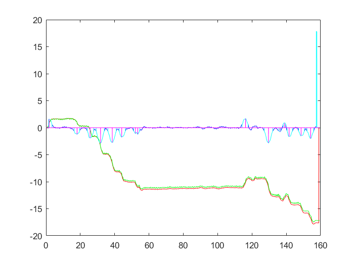 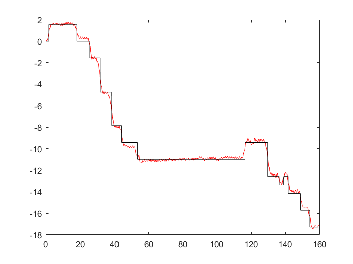
Velocity of subject
X-Y co-ordinate plotting
Fs = 50;
T = 1/Fs;
pks_jerk = findpeaks(jerkx);
indices = find(abs(pks_jerk)>5);
A = pks_jerk(indices);
num_of_steps_jerk = length(A)
figure
plot(A)
title('Absolute Jerk peaks')
xlabel('Frame (delta t = 0.02s)');
ylabel('m^3 /s')
x_distance = 0;
y_distance = 0;
z_distance = 0;
theta = avg_Zgiro(:,10);
Velocity = 0.71;
Velocity_stairs = 0.15;
for n = 1 : length(jerkx)
if jerkx(n) > 20 && jerkx(n) < 30
B(n) = 25;
x_velocity = Velocity * cos(theta(n)) ;
y_velocity = Velocity * sin (theta(n));
z_distance_snapshot = 0;
elseif jerkx(n) > 30 && jerkx(n)<40
B(n) = 35;
x_velocity = Velocity_stairs * cos(theta(n));
y_velocity = Velocity_stairs * sin (theta(n));
if filterz(n) > 2.3
z_distance_snapshot = 0.2;
else
z_distance_snapshot = 0;
end
elseif jerkx(n)> 50
B(n) = 75;
x_velocity = Velocity_stairs * cos(theta(n));
y_velocity = Velocity_stairs * sin (theta(n));
z_distance_snapshot = -0.08;
elseif jerkx(n) < -20 && jerkx(n) > -30
B(n) = 25;
x_velocity = Velocity * cos(theta(n)) ;
y_velocity = Velocity * sin (theta(n));
z_distance_snapshot = 0;
elseif jerkx(n) < -30 && jerkx(n) >-40
B(n) = 35;
x_velocity = Velocity_stairs * cos(theta(n));
y_velocity = Velocity_stairs * sin (theta(n));
z_distance_snapshot = 0;
elseif jerkx(n) < -50
B(n) = 75;
x_velocity = Velocity_stairs * cos(theta(n));
y_velocity = Velocity_stairs * sin (theta(n));
z_distance_snapshot = -0.08;
else
B(n) = 25;
x_velocity = Velocity * cos(theta(n)) ;
y_velocity = Velocity * sin (theta(n));
z_distance_snapshot = 0;
end
x_distance(n+1) = x_distance(n) + x_velocity * T;
y_distance(n+1) = y_distance(n) + y_velocity * T;
z_distance(n+1) = z_distance(n) + z_distance_snapshot;
end
figure
plot(B)
title('Characterising of jerk data')
xlabel('Frame (delta t = 0.02s)');
ylabel('m^3 /s')
hold on
plot (abs(jerkx))
hold off
figure
plot((x_distance .*-1), y_distance)
figure ('units','normalized','outerposition',[0 0 1 1])
plot3((x_distance .*-1), y_distance, z_distance)
xlabel('x distance / m')
ylabel('y distance / m')
zlabel('z distance / m')
num_of_steps_jerk =
276
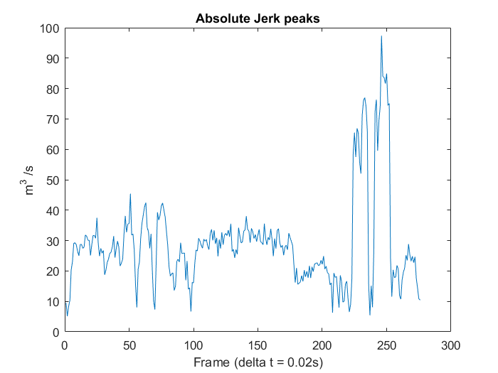 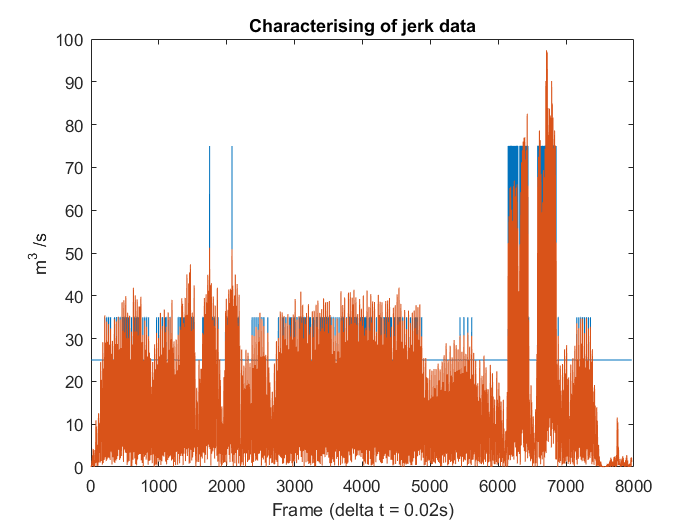 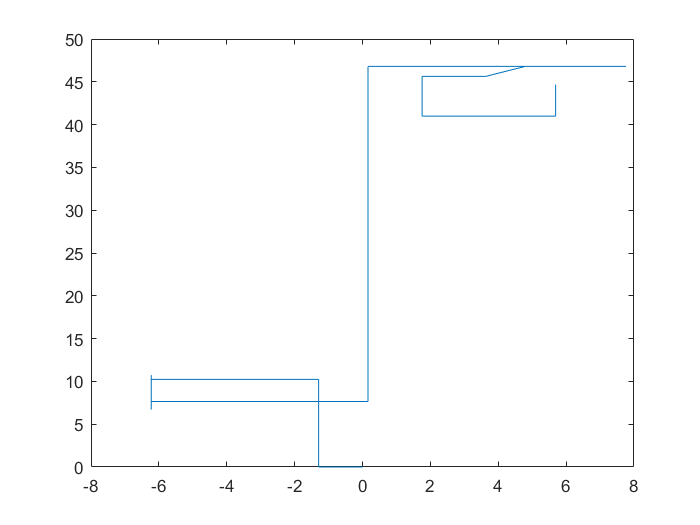 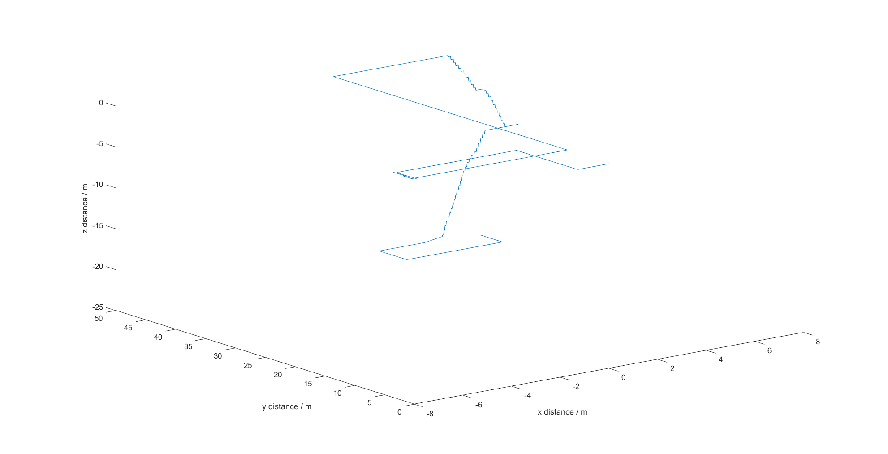